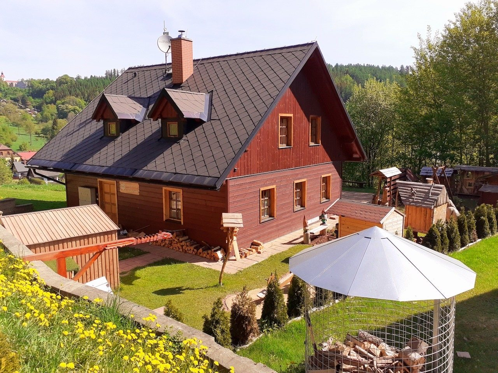

Poptávky pobytu
Ondřej Najman, Adam Najman
+420 720 657 935, +420 776 893 644
chataubedynku@seznam.cz

Najdete nás na adrese Prkenný Důl 67, 542 01 Žacléř. GPS: 50.64352N, 15.90526E.
Ondřej Najman, Adam Najman
+420 720 657 935, +420 776 893 644
chataubedynku@seznam.cz
Podnikatel je zapsán na ŽÚ v Jihlavě.
Pošlete termín, počet osob a poznámku k pobytu.